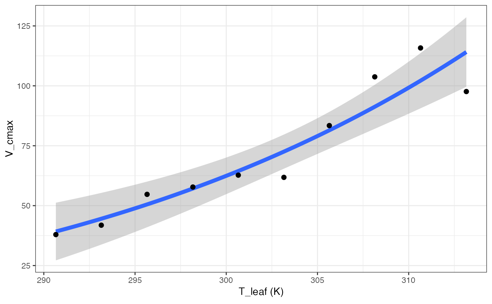
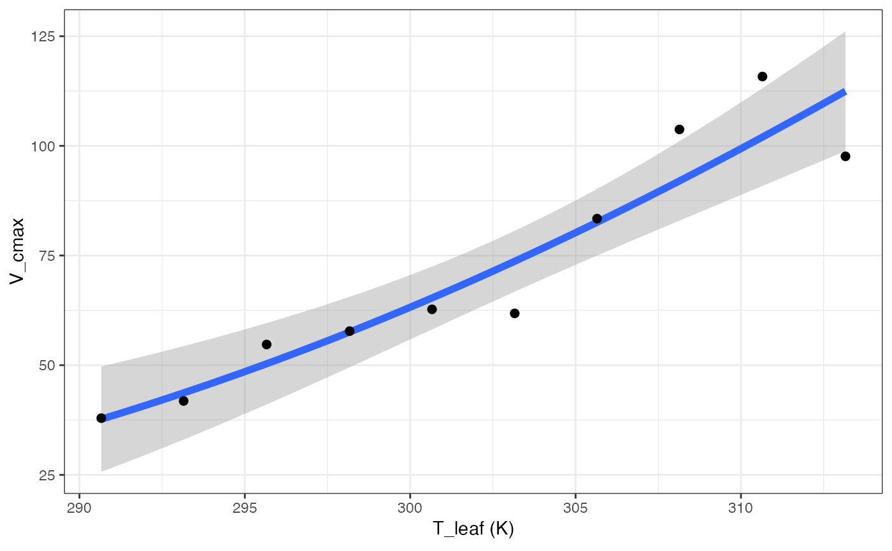
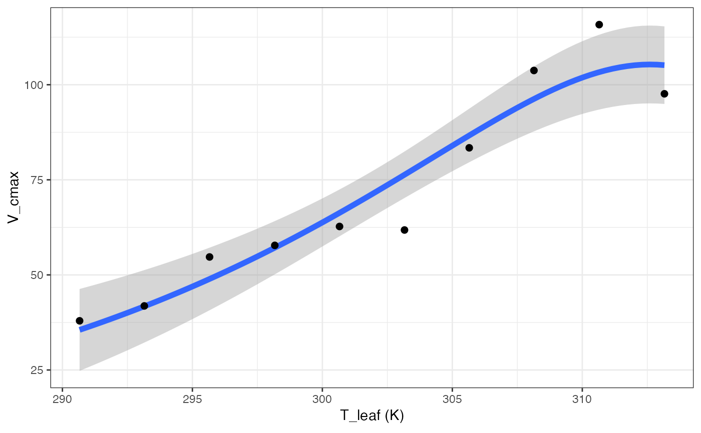
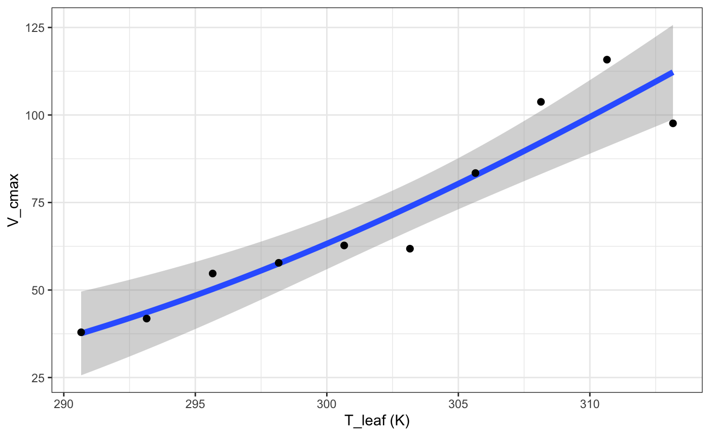
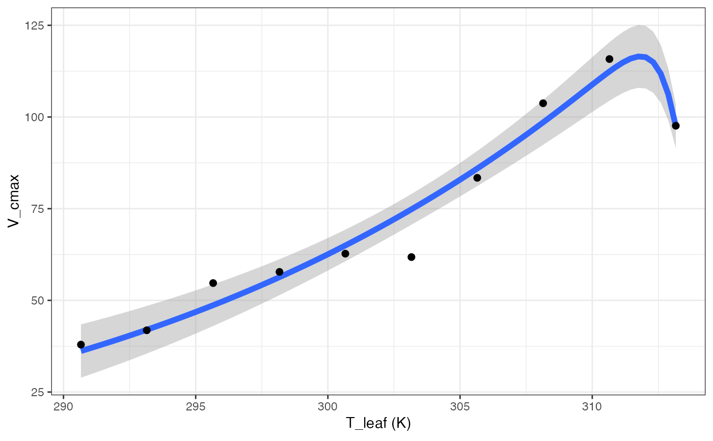

Fitting temperature responses
fit_t_response( data, varnames = list(Par = "Par", T_leaf = "T_leaf"), model = c("Arrhenius", "Kruse", "Heskel", "Medlyn", "MMRT", "Quadratic", "Topt"), start = list(a = 1, b = 1, c = 1, dEa = 1, Ea_ref = 1, Par_ref = 1, Ea = 40000, Par25 = 50, Hd = 2e+05, dS = 650, dCp = 1, dG = 1, dH = 1), setvar = "none", hdset = 2e+05, dSset = 650, title = NULL, ... )
Arguments
| data | Dataframe with temperature response variables |
|---|---|
| varnames | Variable names, where Par is the parameter of interest, and T_leaf is the leaf temperature in K. |
| model | Which temperature response model do you want to use? Defaults to all: Arrhenius, Heskel, Kruse, Medlyn, MMRT, Quadratic, and Topt. |
| start | List of starting parameters for the nls model fits. a, b, and c are needed for the Heskel model, dEa, Ea_ref, and Par_ref are needed for the Kruse model, Ea, Par25, and Hd are all needed for the Medlyn and Topt models while the Medlyn model also requires dS, and dCP, dG, and dH are all for the MMRT model. |
| setvar | Which variable to set as constant for the Medlyn model? Defaults to "none", while "Hd" and "dS" options are available. |
| hdset | Which value should Hd be set to when setvar = "Hd"? Specify in J/mol. |
| dSset | Which value should dS be set to when setvar = "dS"? Specify in J/mol/K. |
| title | Title of output graphs |
| ... | Further arguments to pass on to the nlsLM() function |
Value
fit_t_response fits one or more temperature response models to a dataset, returning a list of lists. The parent list contains the models, while the child list for each model contains the fitted model in element 1, the coefficients in element 2, and a graph in element 3.
References
Arrhenius S. 1915. Quantitative laws in biological chemistry. Bell.
Heskel MA, O'Sullivan OS, Reich PB, Tjoelker MG, Weerasinghe LK, Penillard A, Egerton JJG, Creek D, Bloomfield KJ, Xiang J, Sinca F, Stangl ZR, la Torre AM, Griffin KL, Huntingford C, Hurry V, Meir P, Turnbull MH, Atkin OK. 2016. Convergence in the temperature response of leaf respiration across biomes and plant functional types. PNAS 113:3832-3837
Hobbs JK, Jiao W, Easter AD, Parker EJ, Schipper LA, Arcus VL. 2013. Change in heat capacity for enzyme catalysis determines temperature dependence of enzyme catalyzed rates. ACS Chemical Biology 8:2388-2393.
Kruse J, Adams MA. 2008. Three parameters comprehensively describe the temperature response of respiratory oxygen reduction. Plant Cell Environ 31:954-967
Liang LL, Arcus VL, Heskel MA, O'Sullivan OS, Weerasinghe LK, Creek D, Egerton JJG, Tjoelker MG, Atkin OK, Schipper LA. 2018. Macromolecular rate theory (MMRT) provides a thermodynamics rationale to underpin the convergent temperature response in plant leaf respiration. Glob Chang Biol 24:1538-1547
Medlyn BE, Dreyer E, Ellsworth D, Forstreuter M, Harley PC, Kirschbaum MUF, Le Roux X, Montpied P, Strassemeyer J, Walcroft A, Wang K, Loutstau D. 2002. Temperature response of parameters of a biochemically based model of photosynthesis. II. A review of experimental data. Plant Cell Environ 25:1167-1179
Examples
# \donttest{ # Read in data data <- read.csv(system.file("extdata", "A_Ci_T_data.csv", package = "photosynthesis" ), stringsAsFactors = FALSE ) library(tidyr)#> #>#> #> #># Round temperatures to group them appropriately # Use sequential rounding data$T2 <- round(data$Tleaf, 1) data$T2 <- round(data$Tleaf, 0) # Look at unique values to detect rounding issues unique(data$T2)#> [1] 17 18 20 22 23 25 28 27 30 33 32 35 37 38 40# Some still did not round correctly, # manually correct for (i in 1:nrow(data)) { if (data$T2[i] == 18) { data$T2[i] <- 17 } if (data$T2[i] == 23) { data$T2[i] <- 22 } if (data$T2[i] == 28) { data$T2[i] <- 27 } if (data$T2[i] == 33) { data$T2[i] <- 32 } if (data$T2[i] == 38) { data$T2[i] <- 37 } } # Make sure it is a character string for grouping data$T2 <- as.character(data$T2) # Create grouping variable by ID and measurement temperature data <- unite(data, col = "ID2", c("ID", "T2"), sep = "_" ) # Split by temperature group data <- split(data, data$ID2) # Obtain mean temperature for group so temperature # response fitting is acceptable later, round to # 2 decimal places for (i in 1:length(data)) { data[[i]]$Curve_Tleaf <- round(mean(data[[i]]$Tleaf), 2) } # Convert from list back to dataframe data <- do.call("rbind", data) # Parse grouping variable by ID and measurement temperature data <- separate(data, col = "ID2", into = c("ID", "T2"), sep = "_" ) # Make sure number of values matches number of measurement # temperatures. May vary slightly if plants had slightly # different leaf temperatures during the measurements unique(data$Curve_Tleaf)#> [1] 17.51 20.01 22.50 25.01 27.51 30.01 32.50 34.99 37.50 39.99 20.00 22.51 #> [13] 25.02 40.01# Create ID column to curve fit by ID and temperature data <- unite(data, col = "ID2", c("ID", "Curve_Tleaf"), sep = "_" ) # Convert leaf temperature to K data$T_leaf <- data$Tleaf + 273.15 # Fit many CO2 response curves fits2 <- fit_many( data = data, group = "ID2", varnames = list( A_net = "A", C_i = "Ci", T_leaf = "T_leaf", PPFD = "Qin", g_mc = "g_mc" ), funct = fit_aci_response, alphag = 0 )#> | | | 0% | |==== | 5% | |======= | 10% | |========== | 15% | |============== | 20% | |================== | 25% | |===================== | 30% | |======================== | 35% | |============================ | 40% | |================================ | 45% | |=================================== | 50% | |====================================== | 55% | |========================================== | 60% | |============================================== | 65% | |================================================= | 70% | |==================================================== | 75% | |======================================================== | 80% | |============================================================ | 85% | |=============================================================== | 90% | |================================================================== | 95% | |======================================================================| 100%# Extract ACi parameters pars <- compile_data(fits2, output_type = "dataframe", list_element = 1 ) # Extract ACi graphs graphs <- compile_data(fits2, output_type = "list", list_element = 2 ) # Parse the ID variable pars <- separate(pars, col = "ID", into = c("ID", "Curve_Tleaf"), sep = "_") # Make sure curve leaf temperature is numeric pars$Curve_Tleaf <- as.numeric(pars$Curve_Tleaf) pars$T_leaf <- pars$Curve_Tleaf + 273.15 # Fit all models, set Hd to constant in Medlyn model out <- fit_t_response( data = pars[pars$ID == "S2", ], varnames = list( Par = "V_cmax", T_leaf = "T_leaf" ), setvar = "Hd", hdset = 200000 )#> Warning: NAs introduced by coercion#> Warning: NAs introduced by coercion#> Warning: NAs introduced by coercion#> Warning: NAs introduced by coercion#> Warning: NAs introduced by coercion#> Warning: NAs introduced by coercion#> Warning: NAs introduced by coercion#> Warning: NAs introduced by coercion#> Warning: NAs introduced by coercionout[["Arrhenius"]][["Graph"]]out[["Heskel"]][["Graph"]]out[["Kruse"]][["Graph"]]out[["Medlyn"]][["Graph"]]out[["MMRT"]][["Graph"]]out[["Quadratic"]][["Graph"]]out[["Topt"]][["Graph"]]# }